Creates a lighting specification for 3D polygon layers. Lighting changes the
fill and/or border colors of each face according to its orientation to a
light source (it gives form shadows, not cast shadows). The result can be
added to a plot with + light() to light the whole plot. It can also be
passed to the light argument of individual geom_*_3d() layer functions,
which takes precedence over plot-level lighting.
Usage
light(
ramp = "smooth",
direction = c(-0.5, 0, sqrt(3)/2),
anchor = "scene",
position = NULL,
distance_falloff = FALSE,
fill = TRUE,
color = TRUE,
tone = "lightness",
shadow = 0.8,
highlight = 0.6,
backface_scale = -1,
backface_offset = 0,
method = deprecated(),
mode = deprecated(),
contrast = deprecated()
)Arguments
- ramp
How brightness changes as a surface turns away from the light. One of
"smooth"(the default: gradual change),"hard"(a sharp edge between lit and unlit sides), or"steps"(flat bands), or a ramp fromramp_smooth(),ramp_hard(), orramp_steps(), which take further options."none"disables lighting, and ignores all other arguments:light("none")is equivalent to the bare string"none"accepted by thelightargument of layers andcoord_3d().- direction
Numeric vector of length 3 specifying direction in 3D space (x, y, z) that light comes from for directional lighting. Depending on
anchor, direction is relative to either the plot axes or the viewing pane. The default isdirection(270, 60): light from the xmin side of the cube, 60 degrees above horizontal. At least one value must be non-zero. Values are automatically normalized, so magnitude doesn't matter, only sign and relative magnitude. Direction is specified in visual space (relative to the rendered cube's bounding box), not data space. Usedirection()to build this vector from an azimuth and elevation instead of components. This argument is ignored ifpositionis provided.- anchor
Character string specifying the reference frame for light direction:
"scene"(default): Lightdirectionis fixed relative to the data/scene. Light rotates with the plot, so regardless of rotation,direction = c(1, 0, 0)lights surfaces facing the "xmax" cube face, for example."camera": Lightdirectionis fixed relative to the camera/viewer. Light direction stays in place regardless of rotation, sodirection = c(1, 0, 0)lights surfaces facing the right side of the plot, for example.
When all rotation parameters are zero, these options give the same result.
- position
Numeric vector of length 3 specifying light source position in data coordinate space for positional lighting. When specified, each face gets its own light direction calculated from the light position to the face center. Mutually exclusive with
direction. Default is NULL (use directional lighting).- distance_falloff
Logical indicating whether to apply distance-based intensity falloff for positional lighting using inverse square law (intensity proportional to 1/distance²). Only used when
positionis specified. Default is FALSE.- fill, color
Logical values indicating whether to light fill colors and border colors. Both default to
TRUE.colorapplies to border colors that are mapped or set: polygon layers that have neither are outlined in their fill color, to hide the seams between polygons, and those outlines always match the lit fill.- tone
What lighter and darker look like for a given color. One of
"lightness"(the default: lighter and darker versions of the same hue),"tint"(mixing toward chosen highlight and shadow colors, for colored light), or"normals"(coloring faces by the direction they face), or a tone fromtone_lightness(),tone_tint(), ortone_normals(), which take further options.- shadow, highlight
Strength of shadows and highlights, from 0 (none) to 1 (reaching the tone's full shadow or highlight, e.g. black or white for the default tone). Defaults are 0.8 and 0.6.
- backface_scale, backface_offset
Numeric values that determine how "frontface" light values get modified (scaled and then offset) to derive "backface" light values. A backface is the side of a polygon that faces the underside of a surface or the inside of a volume. Frontface light values, the cosines of faces' angles to the light, are in the range
[-1, 1]. The default scale of -1 gives backfaces highly contrasting lighting to frontfaces. To light backfaces the same as frontfaces, set scale to 1. To uniformly darken (brighten) all backfaces, use a negative (positive) offset.- method
![[Deprecated]](figures/lifecycle-deprecated.svg) Use
Use rampinstead:"diffuse"is nowramp = "smooth","direct"isramp = "hard", and"rgb"istone = "normals".- mode
- Lighting now changes the lightness of
colors in the perceptual OKLab color space, keeping their hue, so
modeis no longer needed. For now,"hsv"and"hsl"still give the color math of ggcube 0.3. - contrast
- Use
shadowandhighlightinstead.contrastscales both of their defaults.
Value
A light object that can be added to a plot or passed to polygon-based 3D layers
or to coord_3d().
Details
Lighting colors each face in three steps:
The angle between the face and the direction toward the light is measured.
A ramp turns the angle into how far the face moves toward shadow or highlight. With the default ramp, faces at 45 degrees to the light keep their base color exactly, faces turned further toward the light are highlighted, and faces turned further away are shadowed.
shadowandhighlightset how strong the effect is in each direction.A tone decides what lighter and darker look like for a given color. With the default tone, colors become lighter and darker versions of the same hue.
Light-like effects can also be achieved in some stats by mapping color
aesthetics to computed variables such as after_stat(dzdx); see
geom_surface_3d() for examples.
Examples
# base plot used in examples
p <- ggplot(sphere_points, aes(x, y, z)) +
geom_hull_3d(fill = "#9e2602", color = "#5e1600") +
coord_3d(scales = "fixed")
# Light qualities ----------------------------------------------------------
# default lighting
p
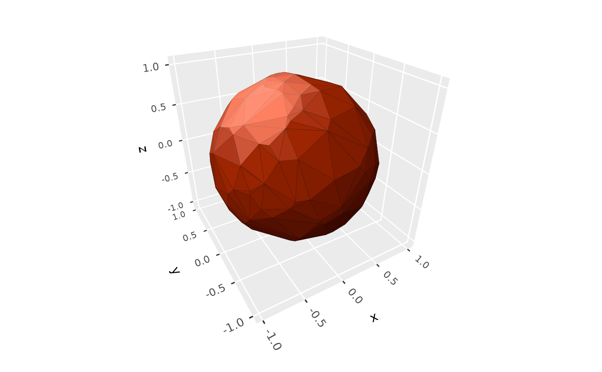
# \donttest{
# stronger shadows and highlights
p + light(shadow = 1, highlight = 0.9)
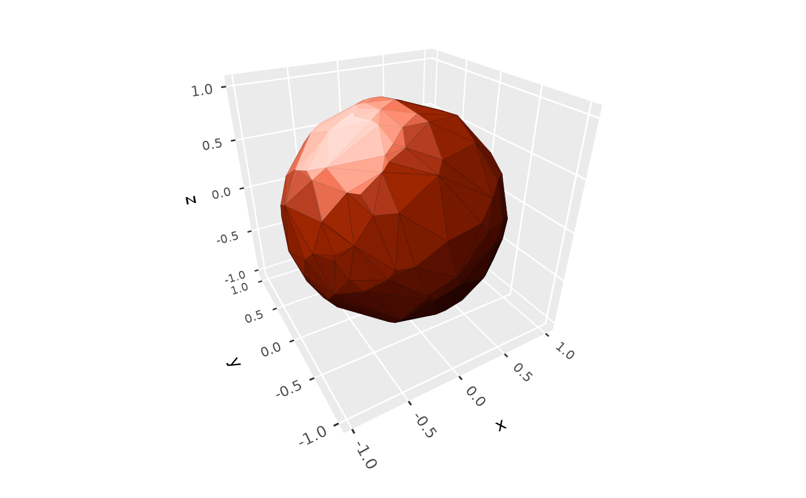
# subtler lighting
p + light(shadow = 0.4, highlight = 0.3)
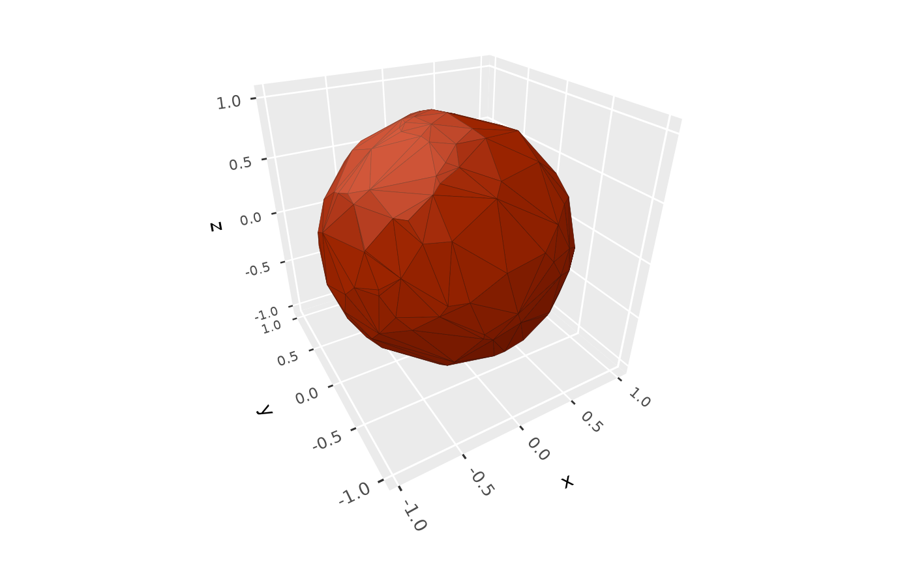
# a sharp edge between lit and unlit sides
p + light("hard")
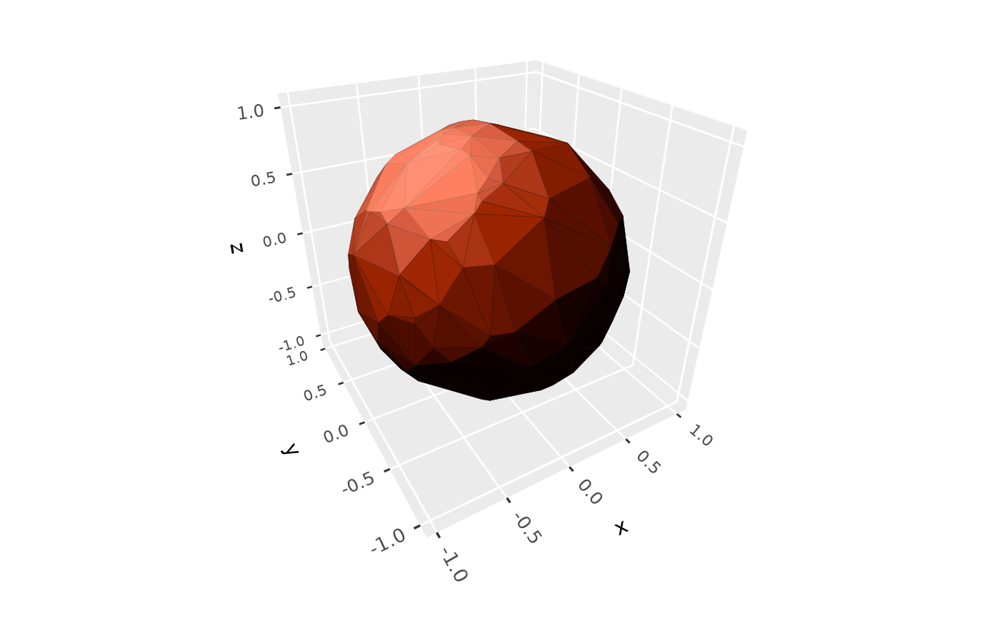
# flat bands of light, with options given by a ramp function
p + light(ramp_steps(n = 3))
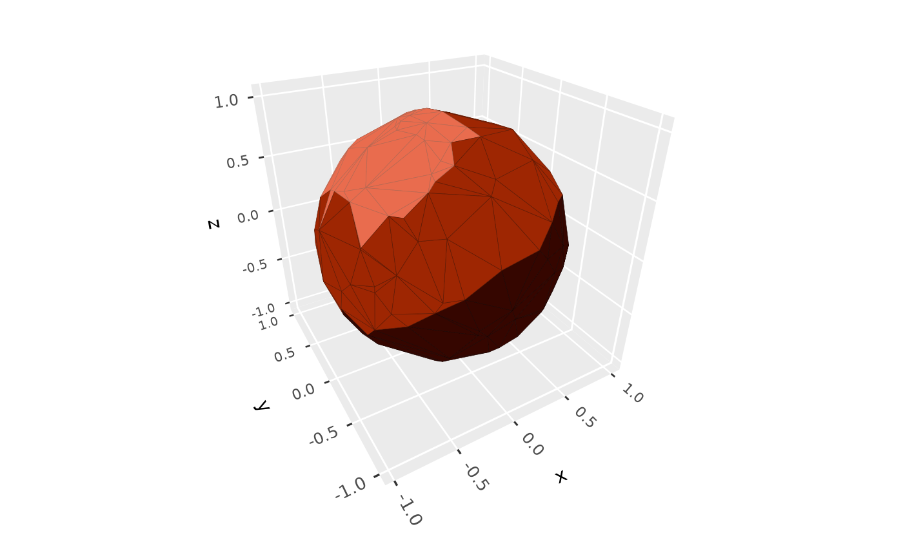
# colored light: warm highlights and cool shadows
p + light(tone = tone_tint(shadow = "midnightblue", highlight = "lightyellow"))
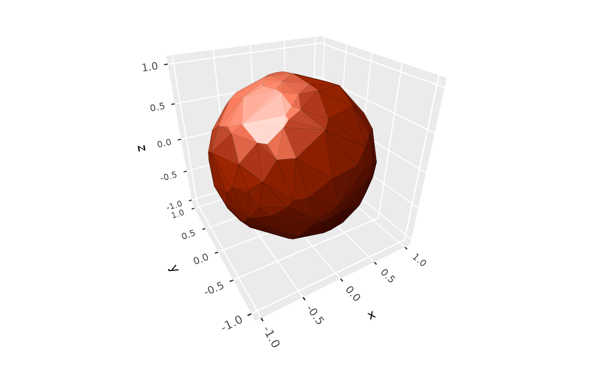
# color faces by the direction they face
p + light(tone = "normals")
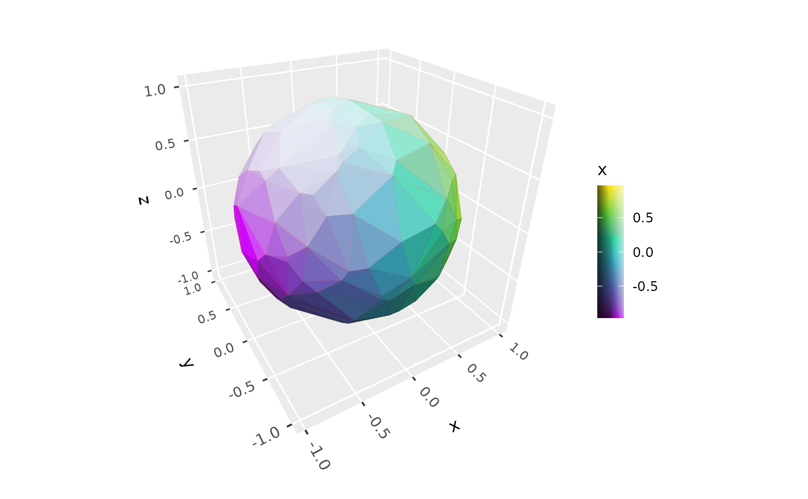
# Lighting targets ---------------------------------------------------------
# use `fill` and `color` to select which aesthetics get modified by light
p + light(fill = TRUE, color = FALSE)
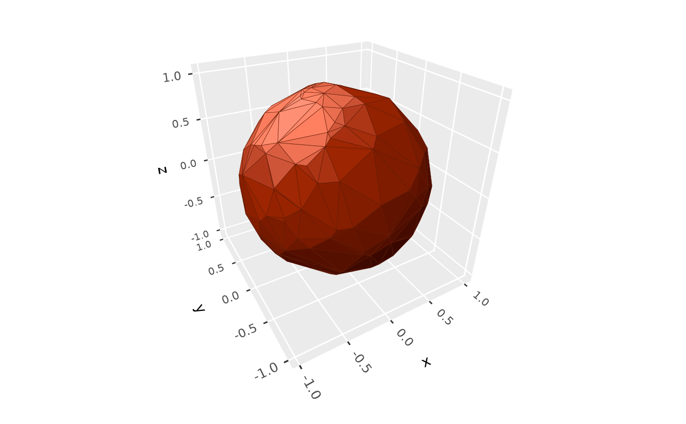
# apply lighting to aesthetically mapped colors, with a shaded guide to match
p + geom_hull_3d(aes(fill = x)) +
scale_fill_viridis_c()
 # disable lighting entirely
p + light("none")
# disable lighting entirely
p + light("none")
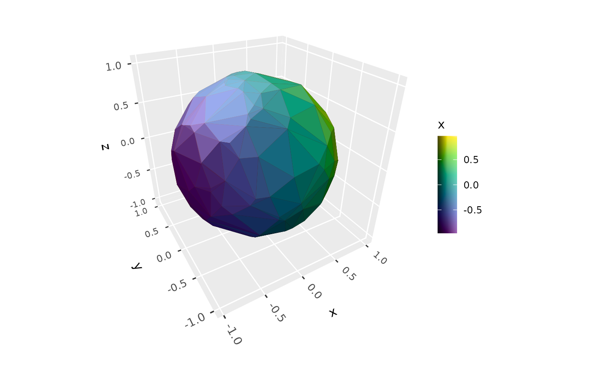
# if provided, layer-level lighting overrides plot-level lighting
p + light("hard") + # plot-level: affects original layer
geom_hull_3d(aes(x = x + 2.5), fill = "#9e2602", color = "#5e1600",
light = light(direction = c(0, -1, 0)))
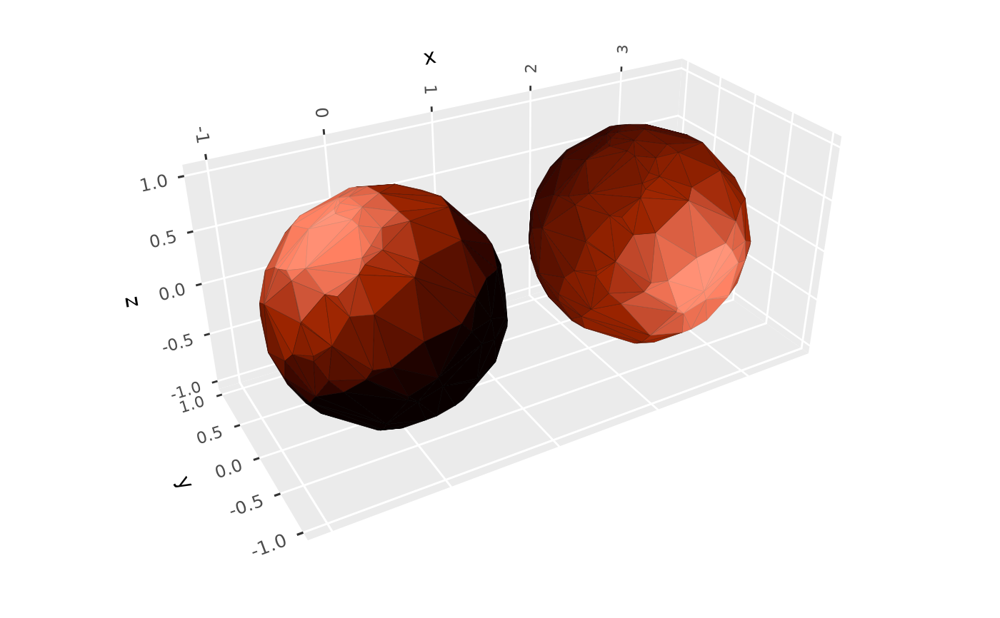
# Light sources ------------------------------------------------------------
# directional light from the xmin-ymin-zmin direction
# (`direction` is relative to rotated axes with default `anchor = "scene"`)
p + light(direction = c(-1, -1, -1))
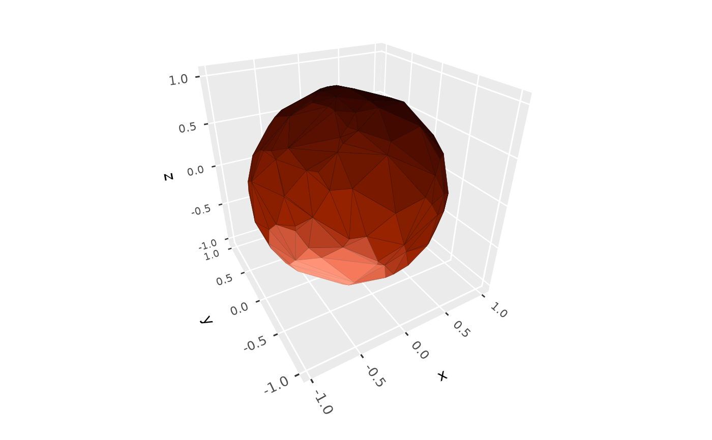
# directional light from top-right corner of figure
# (`anchor = "camera"` makes `direction` fixed relative to the plot)
p + light(direction = c(1, 1, 0), anchor = "camera")
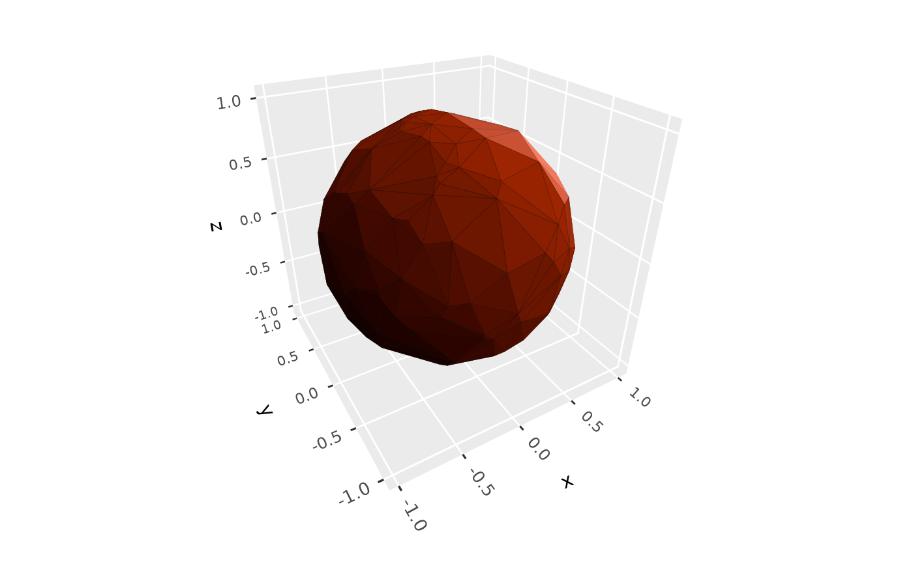
# positional light source within plot
ggplot(mountain, aes(x, y, z)) +
stat_surface_3d(fill = "red", color = "red") +
light(position = c(.5, .7, 95), distance_falloff = TRUE) +
coord_3d(ratio = c(1.5, 2, 1))
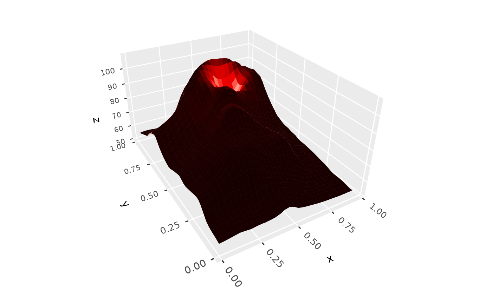
# Backface lighting --------------------------------------------------------
# backfaces get "opposite" lighting by default (`backface_scale = -1`)
p <- ggplot() +
geom_function_3d(fun = function(x, y) x^2 + y^2,
xlim = c(-3, 3), ylim = c(-3, 3),
fill = "steelblue", color = "steelblue") +
coord_3d(pitch = 0, roll = -70, yaw = 0)
p
 # use `backface_scale = 1` to light backfaces as if they're frontfaces
p + light(backface_scale = 1)
# use `backface_scale = 1` to light backfaces as if they're frontfaces
p + light(backface_scale = 1)
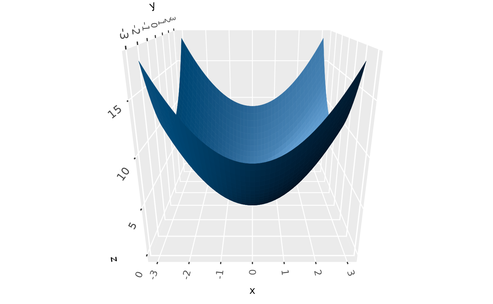
# use `backface_offset` to uniformly darken (or lighten) backfaces
p + light(backface_scale = 1, backface_offset = -.5)
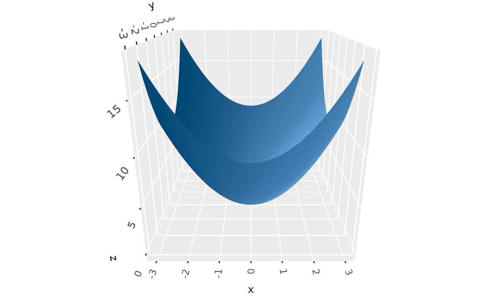
# }